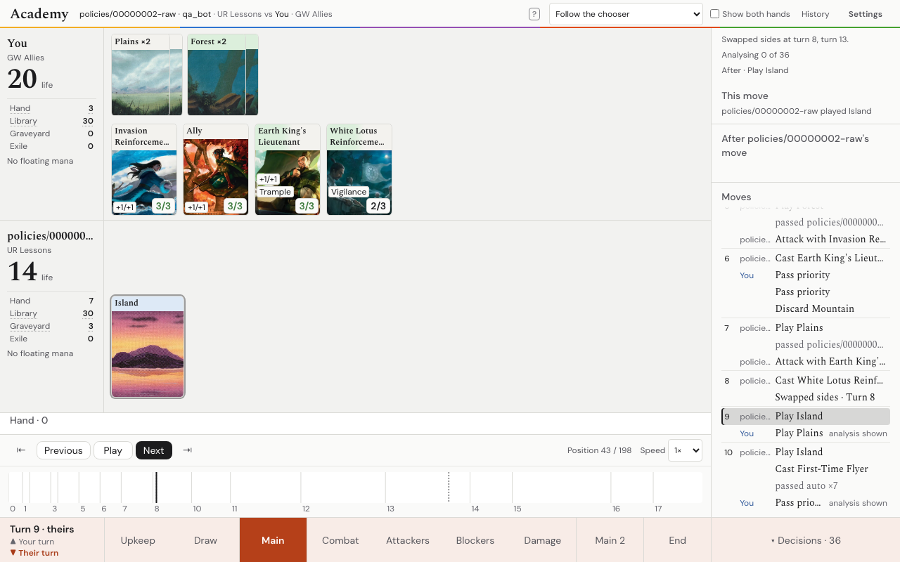
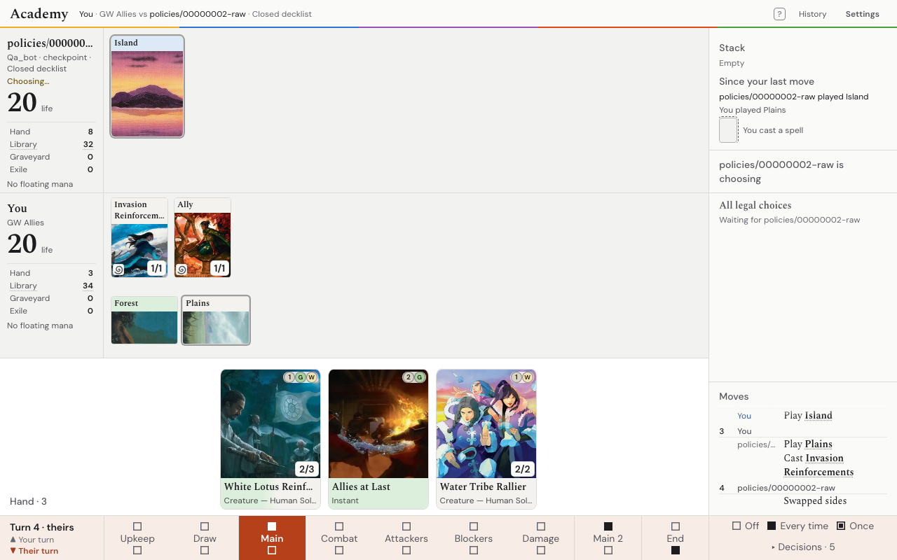

PR #622 · ship review 2026-11-25, headless (nobody present). Branch head 9ef04a852c.
During a live Play game, Settings → Game → This game → Swap sides hands you the opponent's seat in the same game: their hand, their deck under "You", same life, stack and turn. The bot takes the seat you left and plays it at once. The move list gets a Swapped sides divider; Show analysis stays on. Press it again to swap back. The old next-game button is now Swap play/draw under Next game.
The game finishes normally, appears once in Games with each player in their final seat, counts once in My record by how it ended, and opens in Review with a Swapped sides · Turn T divider and the right pilot named on each plate at every position.
From QA (scratch/qa.html), a real game with two swaps:
Swap 1: board flipped 1.0–2.6 s after the press; sheet closed in the same frame;
bot plate "Choosing…"; your next offer 5–7 s later.
End: seat_swaps=[32,95], Games shows it once
("policies/… won · 17 turns · analysis shown at 2 decisions")
/decisions: 36 client rows (20 seat 1, 16 seat 2), no policy rows.


./scripts/play
Start a game, then open Settings → Game and press Swap sides while you have a decision to make. After the game ends, open it from Games.
9ef04a852c).play-session.spec.ts (6 tests) and game-history.spec.ts:85 look for setup controls that no longer exist; study.spec.ts uses the old socket protocol; and after you close Settings with its button, Space reopens Settings instead of taking the primary action. Filed as one Task: 784fa8 (pending Linear sync).DIRTY) and has no checks yet. The next step, gate, syncs the branch and runs CI. Local checks: npm run check 0 errors at this head; the earlier pass ran the four acceptance pytest files (35 passed), vitest (704 passed) and swap-sides.spec.ts (1 passed).Already said in the demo, word for word: "we dont need this" (deck-bound policies), "the thing we might need is just making sure were capturing memory data", "lets ship it". Memory capture: test_recurrent_policy_warms_up_from_step_zero_before_choosing covers a recurrent bot replaying its seat from step zero before it chooses.